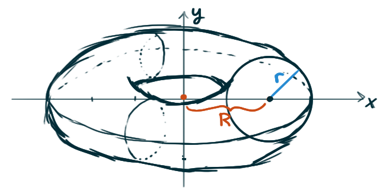

For each of the following curves,
come up with a function of \(t\)
that expresses the arclength of the curve
from the \(y\)-axis on the left
to the point where \(x = t\) on the right.
I.e., your initial integral will have bounds \(0\) and \(t\).
\[
y = x^2
\qquad \qquad
y = \left(1+x^2\right)^{3/2}
\qquad \qquad
y = \ln(\sec(x))
\]
\[
y = \mathrm{e}^x + \mathrm{e}^{-x}
\qquad \qquad
y = \frac{1}{2}\ln(\sin(2x))
\]
Let \(\mathrm{C}\) be the portion of the curve \(y = \sin(x)\)
between \(x = 0\) and \(x=\frac{\pi}{2}\),
let \(\mathrm{R}\) be the region bound between \(\mathrm{C}\)
and the \(x\)-axis,
and let \(\mathrm{S}\) be the solid generated
by revolving \(\mathrm{R}\) about the \(x\)-axis.
Write down an integral that computes
the length of \(\mathrm{C}\).
Write down an integral that computes
the area of \(\mathrm{R}\).
Write down integrals that describe the coordinates
of the centroid of \(\mathrm{R}\).
Write down two different expressions involving integrals
that compute the volume of \(\mathrm{S}\):
one using techniques from your first semester of calculus,
and another using the previous two parts to this question.
Write down an integral that computes
the surface area of \(\mathrm{S}\).
Glance over all these previous integrals
and decide which would be reasonable to evaluate
and which are difficult or impossible.
Evaluate the reasonable ones.
According to a paper published by the AMS,
the height of Gateway Arch in St Louis,
measured in feet, can be modelled by the function
\[ h(x) = 693.8597 - 68.7672\cosh(0.0100333x) \]
\(x\) feet from the point below the summit of the arch.
Note this shape should be called a weighted catenary,
an altered version of a typical catenary that accounts for
the variation in mass along the arch (it’s thinner at the top)
to maximize structural stability.
According to this model,
what is the length of the Gateway Arch?
Each cross section of the Gateway Arch is a equilateral triangle.
At the base the side-length of a cross section is \(54\) ft,
whereas at the top the side-length is \(17\) ft,
Assuming this length varies linearly
from the base to the top, appeal to the Pappus’s Theorem
to approximate the volume of the arch
A torus is a “doughnut-shaped” solid.
Specifically, a torus can be generated by revolving circle
\((x-R)^2 + y^2 = r^2\) (for \(R \gt r\)) about the \(y\)-axis.

Note that \(r\) is the radius of its circular cross-section,
and \(R\) is the distance from the center
of the torus’ hole to the center of a circular cross-section.
Calculate a formula for the volume of a torus
in terms of \(r\) and \(R.\)
Calculate a formula for the surface area of a torus
in terms of \(r\) and \(R.\)
Hint: both of these are easy computations
if you evoke Pappus’s theorem.
The general equation for an ellipse
centered at the origin with eccentricity
is given by the equation
\[ \left(\frac{x}{a}\right)^2 + \left(\frac{y}{b}\right)^2 = 1 \,. \]
Calculate a formula in terms of \(a\) and \(b\)
for the circumference of an ellipse.
Suppose, without loss of generality, that \(a \gt b.\)
The football-shaped solid formed
by rotating such an ellipse about the \(x\)-axis
is called an oblate spheroid,
and the lentil-shaped solid formed
by rotating such an ellipse about the \(y\)-axis
is called a prolate spheroid
Can you calculate formulas
for the volume and surface area of these two ellipses?
Are separate formulas for these two cases necessary?
Gabriel’s Horn
Sketch the curve \(y = \frac{1}{x}\) for \(x\geq 1\),
and sketch the surface that results
from rotating this curve about the \(x\)-axis.
This surface is popularly referred to as Gabriel’s horn.
Write down an integral that computes
the surface area of this horn,
and demonstrate that this integral is divergent.
Write down an integral that computes
the volume of the interior of this horn,
and demonstrate that this integral is convergent.
Suppose you pour paint into the horn.
Since the volume of the interior of the horn is finite,
you’ll need only finitely much paint to “fill” it.
But this finite amount of paint would seem to
coat the entire inner surface of the horn with paint,
thus painting the horn’s infinite amount of surface
with finitely much paint. How can this be?
Archimedes’ Principle states that the buoyant force on an object
partially or fully submerged in a fluid
is equal to the weight of the fluid that the object displaces.
Thus, for an object of density \(\rho_0\)
floating partly submerged in a fluid of density \(\rho_f\)
the buoyant force is given by \(F = \rho_f g \int_{-h}^0 A(y) \,\mathrm{d}y\,,\)
where \(g\) is the acceleration due to gravity
and \(A(y)\) is the area of a typical cross-section of the object.
The weight of the object is given by
\[ W = \rho_0 g \int_{-h}^{L-h} A(y) \,\mathrm{d}y \]
Show that the percentage of the volume of the object
above the surface of the liquid is
\( 100(\rho_f-\rho_0)/\rho_f\,. \)
The density of ice is 917 kg/m³
and the density of seawater is 1030 kg/m³.
What percentage of the volume of an iceberg is above water?
An ice cube floats in a glass filled to the brim with water.
Does the water overflow when the ice melts?
A sphere of radius 0.4 m and having negligible weight
is floating in a large freshwater lake.
How much work is required to completely submerge the sphere?
(Recall the density of the water is 1000 kg/m³.)
Calculate the coordinates of the centroid
of each of the following regions.
The triangle in the first quadrant
bounded by the line \(y = -2x+7.\)
The region under the curve \(y = \mathrm{e}^x\)
between the lines \(x = 0\) and \(x = 1.\)
The region between the curve \(xy = 1\)
and the positive \(x\)-axis
bound by the lines \(x = 1\) and \(x = 2.\)
The unbounded region in the first quadrant
between the curve \(y = \frac{1}{x^3}\)
and the \(x\)-axis, to the right of the line \(x=1.\)
Note that it is not necessarily true
that a plumb line divides a shape into two parts of equal area.
Verify this by considering any example
where you’ve already calculated the centroid
\(\overline{x}, \overline{y})\) of some asymmetric region,
and calculate the area of the region
on either side of the line \(x = \overline{x}.\)
Consider the functions
\[
f(x) = \frac{\pi^{-1}}{1+x^2}
\quad\text{and}\quad
g(x) = \frac{\mathrm{e}^{-x}}{\left(1 + \mathrm{e}^{-x}\right)^2}
\,.
\]
For each of these functions,
verify that it’s a probability density function,
and find a formula for its cumulative distribution function.
Recall that the probability density function
of a normal distribution with mean \(\mu\)
and standard deviation \(\sigma\) is given by
\[ \frac{1}{\sigma\sqrt{2\pi}}\mathrm{e}^{-\frac{1}{2}\left(\frac{x-\mu}{\sigma}\right)^2} \,. \]
Show that this curve’s inflection points
are one standard deviation on either side of the mean.
Challenges
Consider the curve \(y = \cosh(x)\).
Prove that on any interval \([a,b]\)
the area between the curve and the \(x\)-axis on \([a,b]\)
and the arclength of the curve on \([a,b]\)
are equal.
The integrals that appear when computing the arclength of curves
are notoriously difficult to evaluate using elementary techniques.
However, as outlined in this paper,
there is a trick to discovering curves for which
the arclength is easy to calculate.
Define a function \(f\) on interval \((a,b)\) as
\[ f(x) = \frac{1}{2}\int\left(g(x) - \frac{1}{g(x)}\right)\,\mathrm{d}x \]
for any function \(g(x)\) for which \(f\) can be easily computed.
Prove that the arclength of the curve \(y = f(x)\)
will be given by the formula
\[ \frac{1}{2}\int\limits_a^b\left(g(x) + \frac{1}{g(x)}\right)\,\mathrm{d}x\,. \]
For some positive real number \(t,\)
consider the region in the first quadrant
bounded between the curves \(y = x^t\) and \(y=x^{2t}.\).
For what values of \(t\) will the centroid of this region
lie outside of this region?
A solid is generated by rotating about the \(x\)-axis
the region under the curve \(y = f(x)\),
where \(f\) is a positive function and \(x \geq 0\).
The volume generated by the part of the curve from
\(x = 0\) to \(x = b\) is \(b^2\) for all \(b \gt 0\).
Find the function \(f\).
Consider the region between the curve \(y = \frac{1}{x}\)
and the \(x\)-axis, bound on the left by \(x=1\)
and bound on the right by \(x=r\) for some \(r \gt 1.\)
As \(r\) varies, so will the position of the centroid of the region.
For what \(r\) will the centroid
lie on the boundary of the region?
What’s the locus of the centroid as \(r\) varies?
I.e. what’s an equation for the curve traced out by the centroid
as \(r\) moves from \(1\) to \(\infty?\)